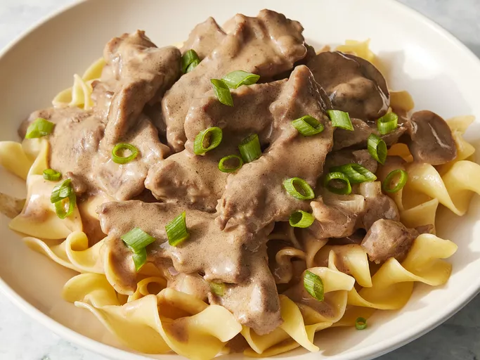

Rich and hearty, Russian cuisine is built around comforting staples like soups, stews, and baked goods. With influences from diverse regions, dishes often feature root vegetables, grains, sour cream, and pickled ingredients, reflecting a deep connection to the seasons and tradition.
A creamy, savory dish of tender beef and earthy mushrooms, perfectly paired with silky sauce that brings comfort with every bite.
Buttery, melt-in-your-mouth cookies with a nutty crunch, finished with a generous coating of powdered sugar for a perfectly sweet indulgence.